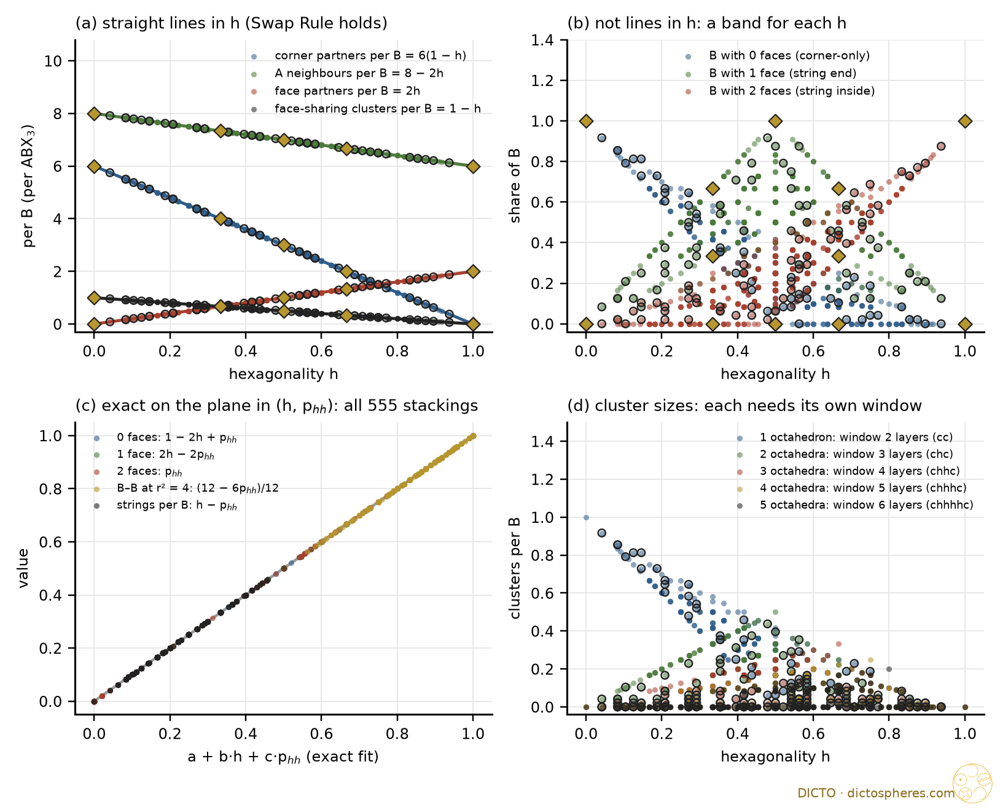
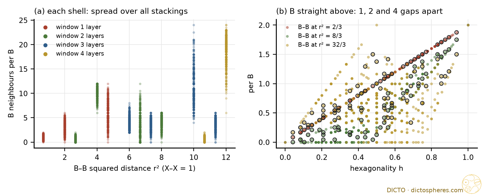

Every count of the hexagonal perovskites ABX3 on every stacking up to twelve layers, exactly, and the one rule behind them
X and A are equal close-packed balls (X–X = 1). Each close-packed layer is AX3, A on a 2 × 2 sublattice. B sits in the octahedral holes made of X only. A layer is h when its two neighbours sit on the same position, c otherwise; h is the share of h layers, phh the share of neighbouring layer pairs that are both h.
The structure is forced by the stacking. In each gap exactly one octahedral hole per cell avoids the A of the lower layer, and the A of the upper layer must avoid it too, which fixes its position. So each c/h word gives one perovskite, and the A pattern never doubles the period (checked on every stacking). Coordinates are integers in thirds of the lattice and quarters of the layer spacing, so 72·r² = 8(x² + xy + y²) + 3z² is an integer and every distance and count below is exact.
The family: all 505 polytypes up to period 12 (every primitive c/h word, up to turning over) and 50 random stackings of 48 layers from a two-state chain, chosen so that h and phh vary independently: 555 stackings. Each quantity, per formula unit, was tested exactly as a line in h, as a plane in (h, phh), and as a linear form in the shares of longer c/h words, by exact elimination over all 555 rows.
Theorem (g = 2). Let F be a quantity of a gap that is fixed by the types of the gap's two layers. Its mean over any stacking is
F̄ = F(cc) + [F(ch) + F(hc) − 2F(cc)]·h + Δ·phh, Δ = F(cc) + F(hh) − F(ch) − F(hc).
So F̄ is a straight line in h exactly when Δ = 0, the Swap Rule.
Proof. The gap types occur with shares f(cc) = 1 − 2h + phh, f(ch) = f(hc) = h − phh, f(hh) = phh. Multiply out. ∎
The direction Δ = 0 ⇒ line in h is #66's result. The perovskite splash shows both directions: the six per-gap quantities that pass the Swap test are lines in h, the three that fail are planes with coefficient Δ = +1, −2, +1 (B with 0, 1, 2 shared faces). In general a count fixed by g layers is a linear form in the shares of the c/h words of length g, which have 2g−1 free values; for the B–B pairs g is the number of layers between the two B.
| quantity (per B = per ABX3) | exact on all 555 stackings | window | status |
|---|---|---|---|
| Straight lines in h (Swap Rule holds) | |||
| face-sharing partners | 2h | 1 | known (#72) |
| corner-sharing partners | 6(1 − h) | 1 | known (#72) |
| X in a shared face, B–X–B = arccos(1/3) = 70.53° | share h | 1 | classical in substance |
| X on a straight B–X–B (180°) | share 1 − h | 1 | classical in substance |
| A in a cuboctahedron / anticuboctahedron | 1 − h / h | 1 | classical |
| A neighbours of B (r² = 3/2) | 8 − 2h | 1 | new (elementary) |
| B–B at r² = 2/3, 2, 14/3 | 2h, 6 − 6h, 12h | 1 | first two = face/corner counts; 14/3 new |
| face-sharing clusters (single octahedra included) | 1 − h | 1 | new |
| Constants: the same in every stacking | |||
| neighbours of X; of A | 8 X + 4 A (2 in the layer, 1 above, 1 below); 12 X | 0 | classical for 3C, here for all |
| empty octahedral holes per gap | 3, each A2X4 with the two A opposite (r² = 2) | 0 | new |
| tetrahedral holes per gap | 8, each AX3 (6 with A in the base, 2 with A at the tip) | 0 | new |
| Planes in (h, phh) (Swap Rule fails; coefficient of phh = Δ) | |||
| B with 0 / 1 / 2 shared faces | 1 − 2h + phh / 2h − 2phh / phh | 2 | new as stated |
| strings of two or more octahedra | h − phh | 2 | new as stated |
| B–B at r² = 8/3, 4, 20/3, 8 | 2phh, 12 − 6phh, 12phh, 6 − 6phh | 2 | new |
| Longer windows | |||
| B–B at r² = 6, 22/3, 10, 34/3 | linear in the shares of 3-layer words | 3 | new |
| B–B at r² = 32/3, 12 | linear in the shares of 4-layer words | 4 | new |
| clusters of L octahedra | share of the word c hL−1 c (L = 1: cc) | L + 1 | classical in substance |
Of 36 quantities, 16 are lines in h (6 of them constants), 9 are planes in (h, phh) and 11 need windows of 3 to 6 layers. No quantity needed anything outside the Window Law.
Clusters. The face-sharing octahedra form chains, one B per gap and one shared face per h layer. In a chain the pieces number octahedra minus shared faces, so clusters per B = 1 − h exactly, and the mean cluster holds 1/(1 − h) octahedra: one number, though not a line. 9R (h = 2/3): trimers, 1/3 per B. 12R (h = 1/2): a trimer and a single octahedron, 1/2 per B. 2H is the limit: one endless chain.
Holes. The three corners of every hole triangle lie on three different A positions of the 2 × 2 pattern, and each layer has one A per cell. The B hole avoids the A of both its layers, so each of the other three octahedral holes takes exactly one A from each layer, and each tetrahedral hole exactly one A. This holds in every gap of every stacking: in the AX3 net the kinds and numbers of holes do not see the stacking at all, so the rule of halves of #57 has nothing to mix here at the level of counts.


Two pairs show the second number at work: 4H (hc) and 12R (hhcc) share h = 1/2 but have phh = 0 and 1/4; the two 10H stackings (hhhcc, tetramers; hhchc, trimers and dimers) share h = 3/5 but have phh = 2/5 and 1/5. Same number of shared faces, different kinds of B and different strings.
| polytype | c/h | examples | h | phh | faces | B, 0 faces | B, 2 faces | clusters | strings |
|---|---|---|---|---|---|---|---|---|---|
| 3C | c | SrTiO3, BaRuO3 (18 GPa) | 0 | 0 | 0 | 1 | 0 | 1 | 0 |
| 2H | h | BaNiO3, BaCoO3 | 1 | 1 | 2 | 0 | 1 | 0 | 0 |
| 4H | hc | 4H-BaRuO3, SrMnO3 | 1/2 | 0 | 1 | 0 | 0 | 1/2 | 1/2 |
| 6H | hcc | hexagonal BaTiO3 | 1/3 | 0 | 2/3 | 1/3 | 0 | 2/3 | 1/3 |
| 9R | hhc | BaRuO3 | 2/3 | 1/3 | 4/3 | 0 | 1/3 | 1/3 | 1/3 |
| 8H | hhhc | BaMnO3−x | 3/4 | 1/2 | 3/2 | 0 | 1/2 | 1/4 | 1/4 |
| 10H | hhhcc | Ba5Sb1−xMn4+xO15 | 3/5 | 2/5 | 6/5 | 1/5 | 2/5 | 2/5 | 1/5 |
| 10H′ | hhchc | Ba5Fe4NiO13.5 | 3/5 | 1/5 | 6/5 | 0 | 1/5 | 2/5 | 2/5 |
| 12R | hhcc | Ba4Fe3NiO12 | 1/2 | 1/4 | 1 | 1/4 | 1/4 | 1/2 | 1/4 |
| 15R | hhhhc | BaMnO3−x | 4/5 | 3/5 | 8/5 | 0 | 3/5 | 1/5 | 1/5 |
| 5H | hhccc | Ba5Ta4O15 | 2/5 | 1/5 | 4/5 | 2/5 | 1/5 | 3/5 | 1/5 |
Ramsdell symbols recomputed from the layer letters: all eleven match. Sequences: Cava et al. (arXiv 2006.05864) for 2H, 4H, 6H, 9R, 10H, 10H′, 12R, 5H; Jin et al. (PNAS 2008) for BaRuO3; 8H and 15R (Adkin and Hayward, Chem. Mater. 2007) from the Ramsdell symbol together with "strings share corners" (Cava et al.). Real compounds with vacancies or two kinds of B are modelled by their stacking only.
Reference library (four searches: perovskite polytypes and face-sharing share; Katz–Ward and Jagodzinski notation; stacking-disorder correlations; face-sharing clusters): Keller et al. 2023 (Si/Ge polytypes, hexagonality, generalized Ising model); Kawanishi and Mizoguchi 2015 (SiC hexagonality); Yi and Canright 1995; Ganesh and Nasr 2023 (correlations between layers n apart in random stackings, through a one-dimensional Ising model); Hart, Hansen and Kuhs 2021 (Markov description of stacking disorder); Rodriguez-Horta et al. 2017. None treats the B network of perovskites. Web: Cava et al., Hexagonal perovskites as quantum materials, arXiv 2006.05864 (read: notation, dimers to tetramers, strings sharing corners or bridged by single octahedra); Jin et al., PNAS 105, 7115 (2008); Adkin and Hayward, Chem. Mater. 19, 755 (2007) (abstract: 15R, 8H, 6H′, 10H; ordering temperatures depend on the share of cubic layers); Darriet and Subramanian, J. Mater. Chem. 5, 543 (1995) (abstract); arXiv 2105.05206; Katz and Ward, Inorg. Chem. 3, 205 (1964) not reachable, cited through Cava et al. Searches: perovskite polytype sequences 2H–15R; Adkin–Hayward BaMnO3−x; Katz–Ward 1964; Darriet–Subramanian 1995. In-house: #57, #64, #66 (Swap ⇔ line in h), #72, studies of 25 and 28 October. Classical, cited not read: Hendricks and Teller (1942) and Jagodzinski (1949) on stacking disorder (layer correlations depend on the word between the layers); the ANNNI J1, J2, J3 energies of polytypes, the energy form of the same law.
Conclusion: in the perovskite polytypes every count obeys the Window Law; the Hexagonality Law is its first step and the Swap Rule decides when a pair count stays on it. Status: done for counts (scripts and exact data in study 2026-10-31-splash2-perovskite). Not run, by decision: the weight walk (volumes) on the perovskite net, because the hole kinds are the same in every gap and the counts already fix the shape of the law. Next in Splash Rules II: Frank–Kasper phases.